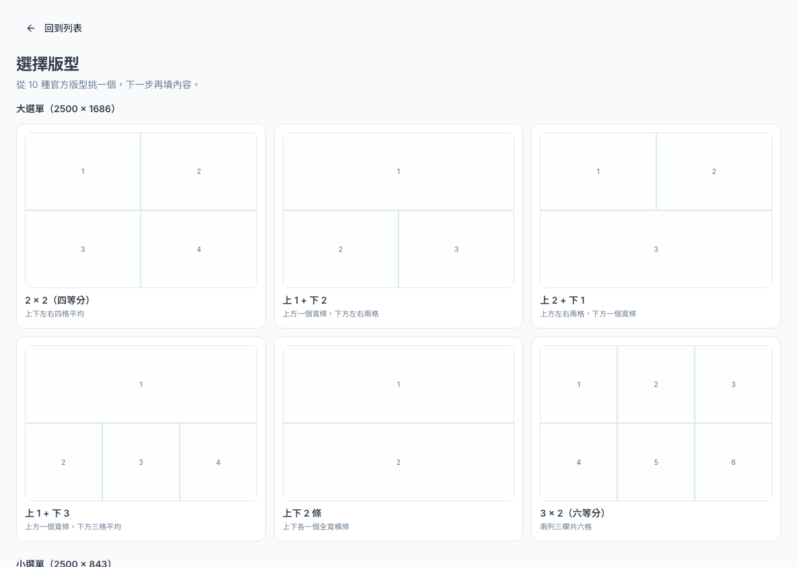
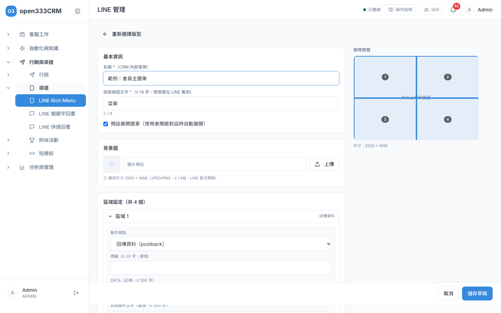
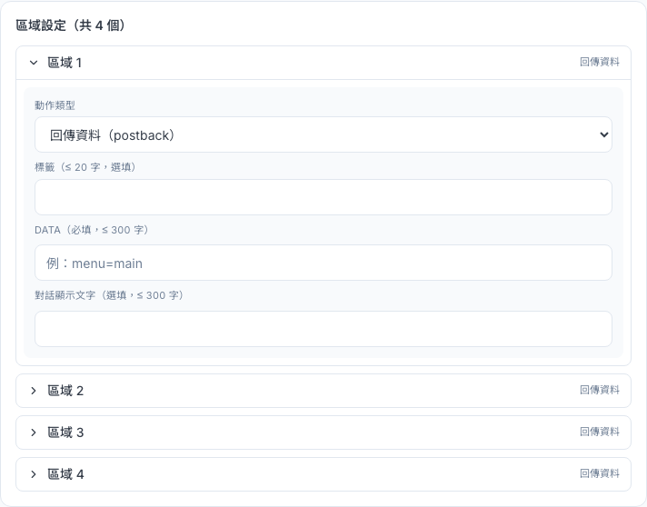
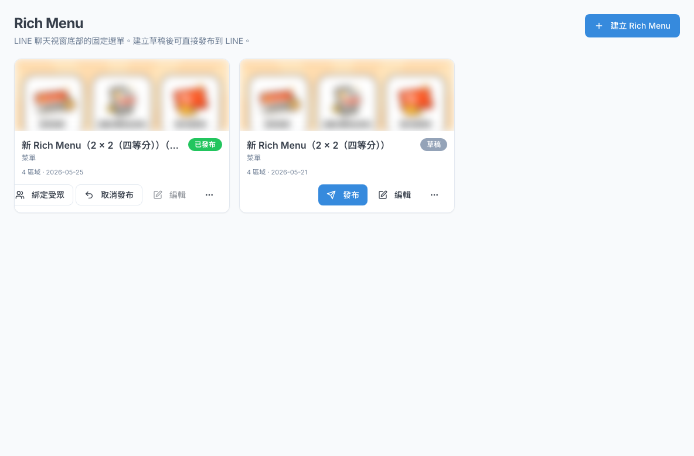
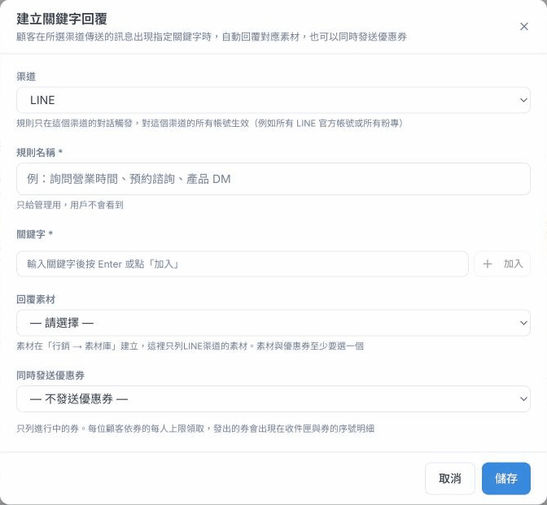
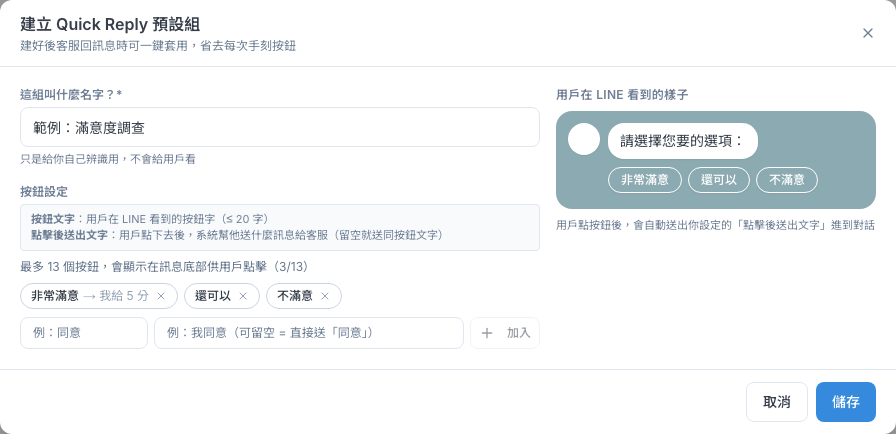
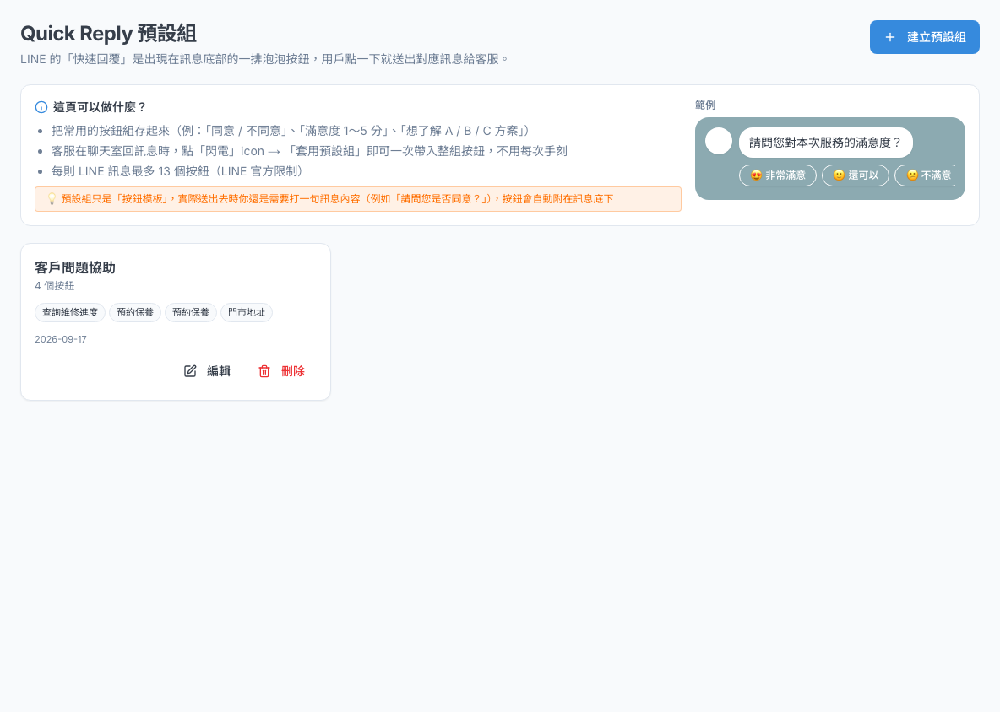

LINE 渠道工具
設定 LINE 官方帳號的聊天室底部選單（Rich Menu）、客戶打到關鍵字時自動回覆的規則，以及客服回訊息時可一鍵帶入的快速回覆按鈕。
1 這頁能做什麼
這一章的三個工具都在側欄「行銷與渠道 › 渠道」底下，專門給 LINE 官方帳號用：
2 Rich Menu：建立選單
Rich Menu 是 LINE 聊天室最下面那一塊可以點的圖片選單，例如「會員專區／最新優惠／門市資訊」。在這裡做好之後發布到 LINE，好友打開聊天室就會看到。
- 側欄點「渠道 › LINE Rich Menu」，在頁首「選擇官方帳號」選要設定的 LINE 帳號。
- 按「建立 Rich Menu」（還沒有任何選單時是「建立第一個 Rich Menu」）。
- 選一個版型（見下方表格，請選建議的版型）。
- 填「名稱」（只給內部辨識用）和「底部按鈕文字」（好友在 LINE 看到的選單開關文字，最多 14 字，例如「會員專區」）。
- 決定要不要勾「設為所有好友的預設選單」（見下方說明，預設不勾）。
- 「背景圖」按「上傳」，上傳設計好的選單圖片（尺寸見下方）。
- 在「區域設定」逐一點開「區域 1、2…」，設定每一塊點了要做什麼（第 3 節）。
- 按「儲存草稿」。草稿只存在系統裡，不會影響 LINE 上的選單。

| 版型 | 大小 | 背景圖尺寸 |
|---|---|---|
| 2 × 2（四等分） | 大選單 | 2500 × 1686 |
| 上 1 + 下 2 | 大選單 | 2500 × 1686 |
| 上 2 + 下 1 | 大選單 | 2500 × 1686 |
| 上 1 + 下 3 | 大選單 | 2500 × 1686 |
| 上下 2 條 | 大選單 | 2500 × 1686 |
| 3 × 2（六等分） | 大選單 | 2500 × 1686 |
| 3 等寬 | 小選單 | 2500 × 843 |
| 左 1 + 右 2 | 小選單 | 2500 × 843 |
| 左 2 + 右 1 | 小選單 | 2500 × 843 |
| 全寬單格 | 小選單 | 2500 × 843 |
10 種版型都可以使用，依你的選單需要幾個按鈕來挑。
背景圖要用 JPG 或 PNG，1MB 以內，尺寸要和版型一致（大選單 2500 × 1686、小選單 2500 × 843）。用「上傳」按鈕上傳時系統會幫你檢查；直接在「圖片網址」貼網址則不會檢查，要等到發布才知道有沒有問題，建議用上傳。

設為所有好友的預設選單
編輯器裡有一個「設為所有好友的預設選單」選項。勾了它再發布，這張選單會成為這個官方帳號所有好友的選單，換掉大家目前看到的選單，好友開啟對話時也會自動展開。
- 新建選單時這個選項預設不勾。只想給部分好友看的選單，維持不勾，發布後用「綁定受眾」（第 4 節）。
- 勾選時會先跳出確認視窗，提醒你這會影響所有好友，按「確定」才會勾上。
- 之後發布或取消發布這張選單時，確認視窗也會再提醒一次。取消發布預設選單，所有好友的預設選單會消失，直到你再發布另一張預設選單。
3 Rich Menu：區域動作
每個區域都要設定「動作類型」，也就是好友點那一塊會發生什麼事。

| 動作類型 | 點了會怎樣 | 要填什麼 |
|---|---|---|
| 傳送訊息（message） | 幫好友在聊天室送出一段文字，例如「我要預約」。可以搭配關鍵字回覆自動回覆。 | 「訊息內容」（最多 300 字） |
| 開啟網址（uri） | 打開一個網頁。也可以用 tel: 開頭讓好友直接撥電話。 | 「網址」。「桌面端網址」通常不用填。 |
| 回傳資料（postback） | 好友點了不會送出文字，只讓系統收到一筆資料。一般用不到。 | 「Data」必填，可以填一個好辨識的代碼，例如 menu=main。 |
| 日期時間選擇、切換 Rich Menu | — | 目前不建議使用。 |
每個區域還可以填「標籤」（最多 20 字，選填），是給視障輔助工具讀的文字。
4 Rich Menu：發布與綁定受眾
草稿存好後，回到列表就能看到它。每張卡片會顯示背景圖、名稱、狀態與區域數。

| 狀態 | 可以做的事 |
|---|---|
| 草稿 | 「發布」「編輯」，「⋯」裡可以「複製」或「刪除」。 |
| 已發布 | 「綁定受眾」「取消發布」。已發布的選單不能直接編輯，要先取消發布。 |
| 發布失敗 | 按「編輯」進去，直接按「發布到 LINE」重試。這個狀態下不能修改內容；如果是圖片或區域設定有問題，請用「⋯ › 複製」做一張新草稿修改後再發布。 |
發布到 LINE
- 確認草稿內容正確，尤其是「設為所有好友的預設選單」有沒有勾（見第 2 節）。
- 在列表按「發布」。確認視窗會告訴你這張是不是預設選單、會不會換掉好友目前的選單，看清楚後按「確定」。
- 勾了「設為所有好友的預設選單」的選單，發布後所有好友都會看到；沒勾的選單發布後，要再用「綁定受眾」指定給某群人才看得到。
綁定受眾（給某群人看不同選單）
沒勾「設為所有好友的預設選單」的選單發布後，可以指定只給某個受眾分群的好友看，其他人維持原本的選單。例如 VIP 會員看到專屬選單。
- 先到「行銷 › 受眾分群」建好分群（第 08 章）。
- 在已發布的選單卡片按「綁定受眾」。
- 「受眾分群」選一個分群，按「綁定」。畫面會顯示「已送出綁定給 N 位有 LINE 身分的使用者（背景執行中）」，按「完成」。
複製與刪除
- 複製：「⋯ › 複製」會做出一張「（副本）」草稿，連「設為所有好友的預設選單」的設定也會一起複製，發布前請再檢查一次。
- 刪除：只有草稿可以刪除，刪了就無法復原。
5 關鍵字回覆
客戶在 LINE 傳來的訊息裡出現你設定的關鍵字，系統就自動回一則素材。例如客戶問「營業時間」，自動回營業時間的圖卡。
- 先到「素材庫」做好要回覆的 LINE 素材（第 09 章）。
- 側欄點「渠道 › LINE 關鍵字回覆」，按「建立關鍵字回覆」。
- 填「規則名稱」，例如「詢問營業時間」（只給內部看）。
- 在「關鍵字」框輸入一個關鍵字，按 Enter 或「加入」，它會變成一個小標籤。可以加好幾個。
- 有兩個以上關鍵字時，選「比對方式」（見下表）。
- 「回覆素材」選一則 LINE 素材，下方會顯示素材名稱與類型。
- 按「儲存」。新規則一存檔就立即生效。

關鍵字怎麼比對
| 比對方式 | 意思 | 例子（關鍵字：營業時間、幾點開） |
|---|---|---|
| 任一關鍵字出現就觸發（OR） | 訊息裡有任何一個關鍵字就回覆。只有一個關鍵字時也是這種。 | 「請問營業時間？」會回覆；「明天幾點開」也會回覆。 |
| 所有關鍵字都要出現才觸發（AND） | 每個關鍵字都要出現才回覆。 | 要同時出現「營業時間」和「幾點開」才會回覆。 |
- 比對是「訊息裡包含這幾個字」就算，不需要一字不差。所以關鍵字太短容易誤觸，例如關鍵字「價」，客戶說「評價」也會觸發。關鍵字請盡量寫完整。
- 英文不分大小寫。
- 只會回覆 LINE 的對話，而且公司有多個 LINE 官方帳號時，每個帳號都會套用同一組規則。
什麼時候會觸發
客戶每傳一則含有關鍵字的訊息，就會自動回覆一次，沒有次數上限；即使這段對話已經由客服接手也會回。命中的規則能在這段對話的渠道送出回覆時，AI 客服就不會再另外回覆，避免客戶一次收到兩則。頁面上「怎麼用？」框裡的說明也是這樣寫的。
管理規則
- 列表最左邊的「啟用／停用」膠囊點一下就會切換，立即生效。暫時不想自動回覆，就切成停用。
- 「編輯」可以改關鍵字和素材；「刪除」會移除規則。
- 回覆素材顯示「素材已被刪除」時，代表那則素材被刪了、停用了，或素材太多沒載入到，請編輯規則重新選素材。
{{contact.name}} 這類變數（寫法見第 08 章第 6 節），送出時會換成客戶自己的資料。客戶沒有那筆資料時改用素材的預設值；連預設值也沒有就留空，不會出現大括號。選了含變數的素材，對話框會列出有哪些變數。6 快速回覆預設組
快速回覆是 LINE 訊息底下的一排泡泡按鈕，客戶點一下就會送出對應的文字，不用自己打字。把常用的按鈕組（例如「滿意度 3 選 1」「同意／不同意」）存成預設組，客服在收件匣回訊息時就能一鍵帶入。
- 側欄點「渠道 › LINE 快速回覆」，按「建立預設組」。
- 填「這組叫什麼名字？」，例如「滿意度調查」（只給自己辨識）。
- 在「按鈕設定」左邊框填按鈕文字（最多 20 字），右邊框填客戶點了要送出的文字（可以留空，留空就送出跟按鈕一樣的字）。
- 按「加入」，按鈕才會加進清單。重複這一步加更多按鈕，最多 13 個。
- 右邊「用戶在 LINE 看到的樣子」可以預覽。確認後按「儲存」。

客服怎麼使用
在收件匣回覆 LINE 對話時，點輸入框旁的閃電圖示，選「套用預設組」，整組按鈕就會帶進這則訊息。按鈕會附在你打的文字底下，所以還是要打一句話（例如「請問您對本次服務滿意嗎？」）再送出。
